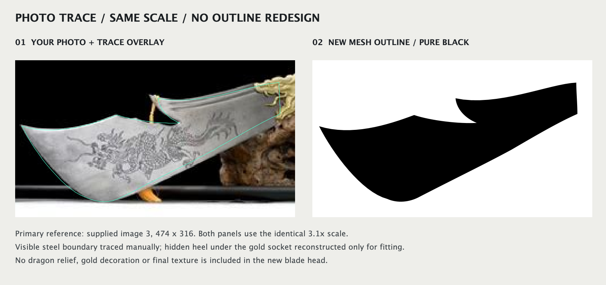
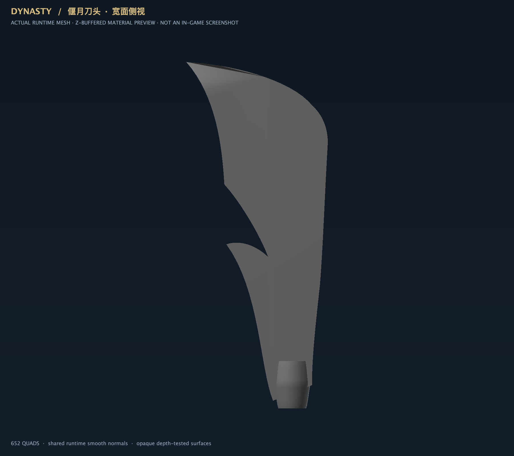
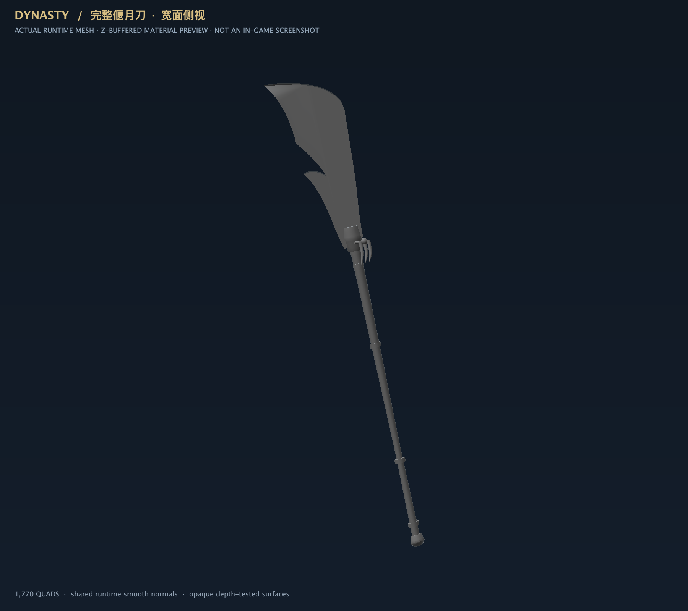

青龙偃月刀：按实物照片重新描形
第三张照片为主参考。废弃旧刀头基础网格；关羽人物、姿势、刀杆和安装方向不变。本轮只验收轮廓、灰模及连接，没有新增最终纹理或青龙装饰。以下是实际模型离线渲染，并非游戏截图。
① 原照片描边 / 新轮廓黑色剪影 · 同尺寸对照

两边均为原图的 3.1 倍，不做非等比拉伸。可见钢刃按照片描绘；金色吞口遮挡的短刀根仅补齐连接。单独查看竖直黑色剪影
② 新刀头 · 无最终材质灰模侧视图

轮廓与二维对照使用同一组数据；刀身实体厚度为 0.16 模型单位，刀尖处收薄。保留现有吞口，不新增装饰。
③ 原有刀杆连接 · 完整武器灰模

现有刀杆长约 5.4 模型单位，刀头轴向约 3.1；刀头与吞口接合，完整刀尖和尾端均在画面内。
编译及几何检查通过。本轮未同步运行中的实例或修改存档，等待轮廓验收。